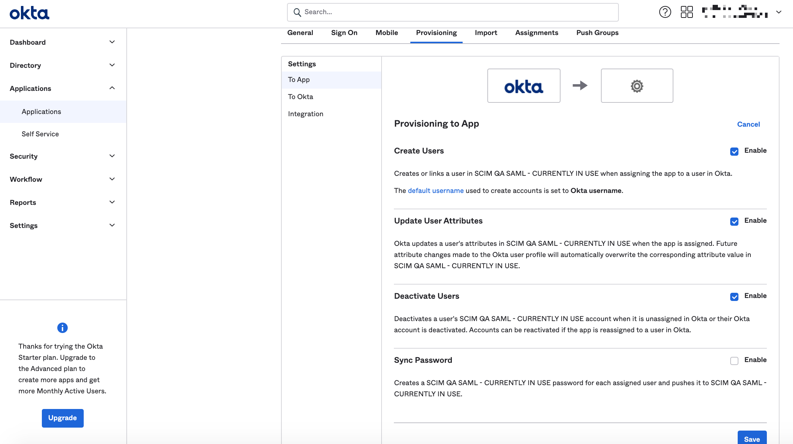
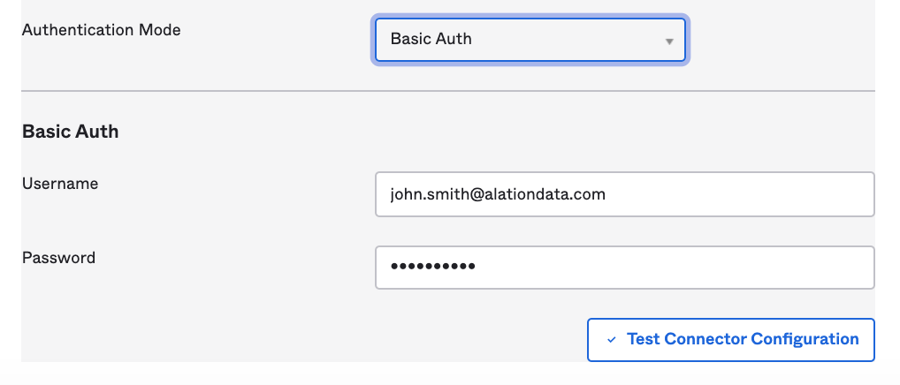
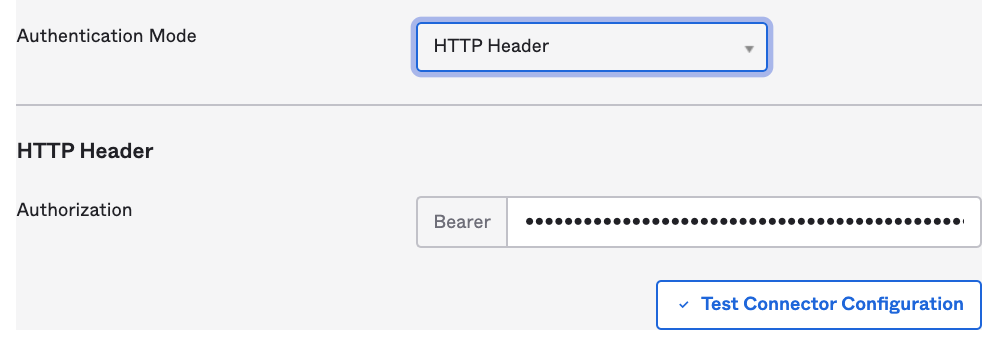

Set Up SCIM Integration in Okta¶
Available from release 2021.3
Okta offers 2 configuration options to enable SCIM for an application integration. You can either enable SCIM Provisioning on an existing SAML application integration or create an additional OIN-type application integration.
Perform the configuration in Okta after enabling SCIM on the Alation server. This will give you the ability to test connection between the Alation server and Okta using the service account credentials you set up on the Alation side.
Set Up SCIM Integration Using an AIW Application Integration¶
Note
The configuration described below is based on Add SCIM provisioning to app integrations in Okta documentation.
Prerequisite¶
You have a fully-configured SAML application integration in Okta that is used for user authentication with SAML on the Alation server.
Configuration Steps¶
In Okta admin console > Applications, open the page of your SAML application integration. App Settings should be available on the General tab.
Click Edit for General > App Settings. This will enable editing of the application configuration.
Under Provisioning, select SCIM.
Click Save for this block of settings. After you save, the tab Provisioning will appear in the application configuration.
Click the Provisioning tab. Under the Settings menu on the left, select Integration.
Click Edit and under SCIM Connection, fill in the following information:
Settings
Values
Recommendations
SCIM connector base URL
https://<base_Alation_URL>/scim/v2/The value for the SCIM endpoint on the Alation server
Unique identifier field for users
userName
Alation expects the value
userNameSupported provisioning actions
Select checkboxes for:
Push New Users
Push Profile Updates
Push Groups
Do not select the option Import New Users and Profile Updates. Alation does not support import to the IdP
Authentication Mode
Basic Auth
HTTP Header (from version 2021.4)
Select Basic Auth to use basic authentication with username and password
Select HTTP Header to use token authentication.
Click Test Connector Configuration to test if SCIM connection is successful.
Save.
Back on the settings > Provisioning tab, two new options should become available in the Settings menu on the left: To App and To Okta. Select To App and click Edit.
Enable the following options under To App:
Create Users
Update User Attributes
Deactivate Users Provisioning
Do not select Sync Password as it is not supported by Alation.
Save.
Click the Push Groups tab in the upper row of tabs. Create or link groups that you wish to be pushed to Alation. Groups should be consistent with assignments in the SAML settings.
Push the Groups.
Log in to Alation and make sure the Groups and their members are now in Alation. See Testing SCIM Configuration.
{kind=link}
{kind=link}
{kind=link}
Authentication Mode¶
If you have selected Basic Auth, provide the username and password:

Username: Specify the username of the SCIM service account you created when configuring SCIM integration on the Alation server
Password: Specify the password of the SCIM service account you created when configuring SCIM integration on the Alation server
{kind=link}
If you have selected HTTP Header, provide the access token you created on the Alation server:

Bearer: Provide the authorization token value
{kind=link}
Set Up SCIM Integration Using an OIN Application Integration¶
This setup uses 2 separate Okta applications: a SAML application integration for authentication and a SCIM integration application for automated user and groups management.
Prerequisite¶
You have configured and enabled SAML authentication and SCIM integration on the Alation side.
Important
It is important to keep user and group assignments in the SAML app (authentication) and the SCIM app (users & groups management) consistent.
If a user is assigned to the SAML app but not to the SCIM app, this user will be able to log in to Alation, but the lifecycle of this user account will not be manageable by the automatic SCIM sync. If a user is assigned to the SCIM app but not to the SAML app, this user will be pushed to Alation by the SCIM sync process but will not be able to log in. You will need to make sure that users who are assigned to the SAML app are the same users assigned to the SCIM app.
Configuration Steps¶
In Okta admin console, go to Applications and click Browse App Catalog:
Search for SCIM 2.0 Test App (Basic Auth) and click the app name:
On the page of the SCIM 2.0 Test App (Basic Auth) application, click Add to add it to your applications:
On the Sign on tab, make sure the following information is specified:
In the Sign on methods section:
SAML 2.0 radio button is selected
checkbox Disable Force Authentication is selected;
In the Credentials Details section:
Application username format: Okta username
Update application username on: Create and update
Click Done.
On the Provisioning tab, click Integration on the left-hand sidebar and click the Configure API Integration button:
Select the Enable API integration checkbox and enter the required information:
SCIM 2.0 Base Url:
https://<BASE_URL>/scim/v2/Username: service account username created in Alation during SCIM configuration
Password: service account password created in Alation during SCIM configuration
Click Test API Credentials to test connectivity.
Click Save.
Select the To App option in the left sidebar, then click Edit and enable the following options:
Create Users
Update User Attributes
Deactivate Users Provisioning
Do not select Sync Password (not supported by Alation).
{kind=link}
{kind=link}
{kind=link}
{kind=link}
{kind=link}
Assign users and groups, then push groups to Alation.
Test the configuration.